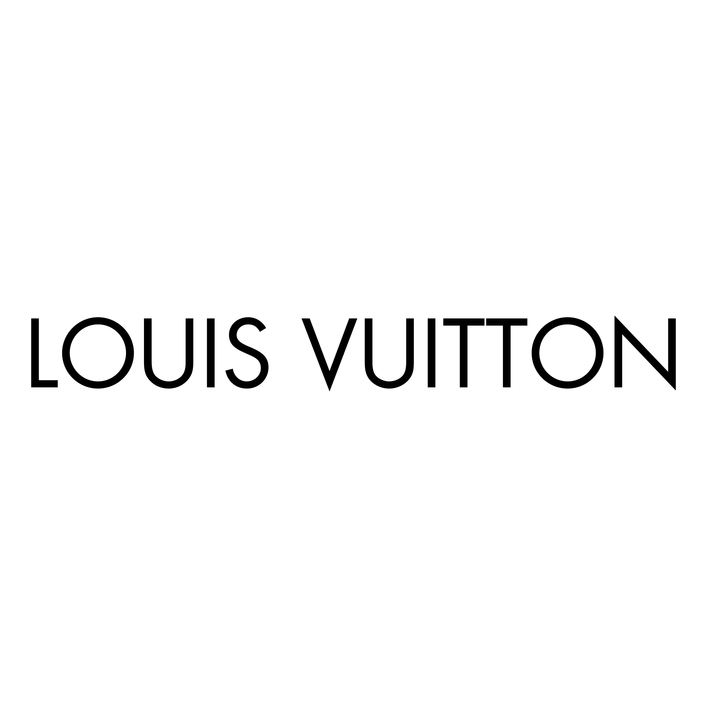
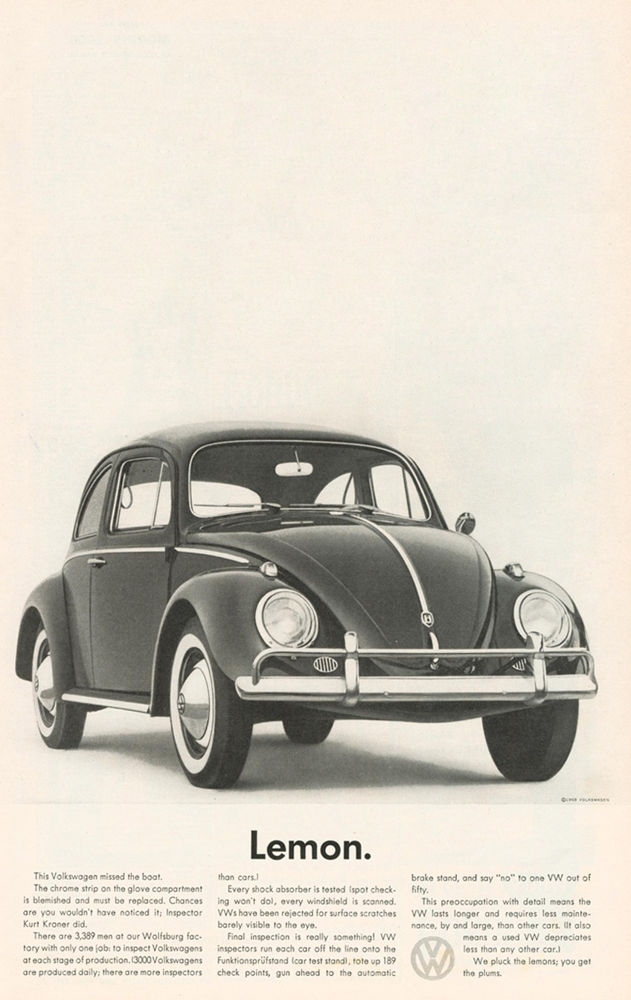

Futura is a geometric sans-serif typeface created in
Germany in the 1920s. Designed by Paul Renner and released
in 1927 by the Bauer Type Foundry, it reflects the modernist
belief in reducing letterforms to pure geometric shapes
while avoiding ornamental detail. Although Renner was not
directly associated with the Bauhaus school, Futura shares
its emphasis on functional and rational design.
Renner began sketching the concept in 1920, and the final
design emerged as part of a broader European movement toward
clarity and efficiency in visual communication. Futura was
quickly adopted in advertising, publishing, and branding,
where its clean forms proved effective for headings and
signage.
One of Futura’s most historically significant uses was
on the Apollo 11 lunar plaque in 1969, symbolizing industrial
and technological achievement. Over time, the typeface expanded
into numerous variations, including condensed, bold, display,
and extended styles. Futura has influenced many geometric
sans-serif typefaces throughout the 20th century and remains
widely used by brands such as Supreme, Volkswagen, Royal
Dutch Shell, Crayola, FremantleMedia, and HP.
Mr Eaves Mod
Mr Eaves Modern is a sans-serif typeface designed by
Zuzana Licko and released in 2009 by Emigre Fonts, an
influential independent digital type foundry based in Berkeley,
California. It was developed as a companion to Mrs Eaves,
a serif typeface inspired by Baskerville, originally designed
in 18th-century England.
Rather than simply removing serifs from Mrs Eaves, Licko
created Mr Eaves with its own typographic identity while
maintaining proportional harmony with its serif counterpart.
The Mr Eaves family includes Mr Eaves Sans, which retains
more humanistic characteristics, and Mr Eaves Modern,
which adopts a cleaner, more geometric appearance with
squared terminals and simplified counters.
Unlike Futura’s strong association with avant-garde
modernism, Mr Eaves Modern was designed as a flexible and
balanced sans-serif suitable for editorial, corporate, and
branding applications. Its clear spacing and refined
letterforms allow it to perform effectively in both print
and digital environments, giving it a professional and
understated presence.
Comparison
Conducting a pentagram diagram shows that the mean line,
cap line, and ascender line of Futura (left) are all higher than that
of Mr Eaves (right). Futura’s descender line also extends below Mr
Eaves’s. Futura is taller and narrower than Mr Eaves.The lowercase letter ‘a’ is pretty similar in both typefaces,
however the counter of Futura is narrower than that of Mr Eaves. The terminal of Mr Eaves is angled on the lowercase ‘g’,
while Futura’s terminal is horizontal and flat. Futura’s tail is
also more rounded than Mr Eaves, and Futura’s counter is narrower
than Mr Eaves.The counter of the lowercase ‘d’ is also narrower for
Futura than Mr Eaves. Both typefaces have very similar structures
for this letterform, and both have very low contrast between
thicks and thins.The angles of the terminals of the lowercase ’s’ is different
between Futura and Mr Eaves — Mr Eaves has an angled terminal, while
Futura has a flat terminal.The counter of the lowercase ‘e’ is rounder in Futura than it
is in Mr Eaves. Mr Eaves also has a larger aperture than Futura.The angles of the strokes in the lowercase ‘w’ is similar for
both Futura and Mr Eaves. Futura has pointed apexes and vertexes,
while Mr Eaves has blunt, flat apexes and vertexes. Futura’s lowercase ‘u’ has no stem, while Mr Eaves does. The
bowl of Mr Eaves is more angled than Futura to account for this
extension.The stem of the lowercase ‘j’ is completely straight for Futura,
while Mr Eaves’s stem ends in a curve. The tittle is also round for
Futura and square for Mr Eaves.The hook of the number 6 is straight for Futura and curved
for Mr Eaves.The top of the number 3 is very different between Futura and
Mr Eaves. For Futura, the top is curved, similarly to the bottom bowl
of the number. For Mr Eaves, the top is made up of straight, angular
lines, which is distinct from its curved bowl at the bottom. The distinctions between Futura and Mr Eaves are fairly evident
in the number 5, as the stress is diagonal in Futura and vertical in Mr
Eaves.The uppercase ‘A’ is very similar for both Futura and Mr Eaves,
but there is a key distinction in their apexes. The apex of Futura’s ‘A’
is pointed, while the apex of Mr Eaves’s ‘A’ is flat.Futura’s exclamation point has a completely straight stem and a
round dot, while Mr Eaves’s exclamation point has a tapered stem and square
dot. Both are similar in height and thickness.The question marks of Futura and Mr Eaves are very different.
Futura’s question mark is much more curved than Mr Eaves, and once again
Futura has a round dot while Mr Eaves has a square one.The uppercase ‘H’ is shorter for Futura than for Mr Eaves, but
Futura’s crossbar is thicker than that of Mr Eaves. Even with the tops of
both crossbars aligned, Futura’s extends below Mr Eaves’s.The stem of Mr Eaves’s uppercase ‘J’ is narrower and taller than
Futura’s. Futura’s terminal is diagonal, while Mr Eaves’s is vertical.Similarly to ‘w’, the uppercase ‘M’ of Futura has pointed apexes
and vertexes, while Mr Eaves has blunt, flat apexes and vertexes. Futura’s
stems are also more diagonal, while Mr Eaves’s are vertical.The tail of the uppercase ‘Q’ is straight for Futura and
crosses through the circular part of the letterform. The tail of
Mr Eaves is curved and begins on the outside of the circle.Futura’s quotes are made up of straight, diagonal lines,
while Mr Eaves’s are curved and end in squares.The counters are larger in Mr Eaves than Futura. Also, the
proportion the upper and lower bowls in Futura are more different than
the similar ones of Mr Eaves uppercase ’B’.The asterisk for Mr Eaves is much bigger and has rounded ends.
Futura’s asterisk is smaller and blockier.Futura’s semicolon is made up of a straight, diagonal comma and
round dot. Mr Eaves’s semicolon is made up of a curved comma and a
square dot.The at symbol for Mr Eaves has higher contrast between thicks and
thins than Futura does. Futura’s at symbol is also more circular, while
Mr Eaves’s is narrower.
Examples and visual references
Futura
This brochure for A & P Metal Products, uses Futura, and some of
Sutnar’s signature geometric lettering for the “mm”.The Nike logo uses a wordmark inspired by Futura, emphasizing bold
simplicity and modern design.

The Louis Vuitton wordmark reflects the clean, geometric influence
of Futura, reinforcing a modern yet timeless brand identity.Use of Futura in The Beatles’ song cover “Get Back” released
in 1973.Prince’s name looks to be set in Extrabold Russell Square by
John Russell, originally released by VGC in 1973. The A-side title is
set in all-caps Futura.

This vintage Volkswagen “Lemon” advertisement uses Futura for
its bold headline and clean body text, reinforcing a modern and
straightforward brand voice.
Mr Eaves Mod
Anderson University selects Mr Eaves for its visual identity,
balancing timeless serif elegance with a modern academic presence.This trumpet performance poster uses Mr Eaves to present
composer names and event details with refined, contemporary elegance,
reinforcing the sophistication of the upcoming recital.Use of Mr Eaves in advertising for the 1 year anniversary of
Little Dame, a small feminist shop in San Diego.Rochester Christian University uses Mr Eaves in its rebrand,
pairing classic serif forms with contemporary refinement to convey
tradition and academic credibility.